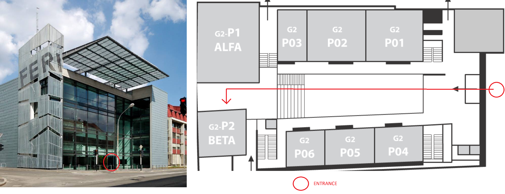

Student Computing Research Symposium is an annual research conference jointly organized by University of Maribor, University of Primorska and University of Ljubljana. Its goal is to encourage students to present and publish their research work in the domain of computer science and to facilitate cooperation and creativity.
Submission Deadline
Author Notification
Registration Deadline
Camera-Ready Paper
Conference Starts
We invite both B.Sc. and M.Sc. students to submit research papers from all fields of computer science. The length of the paper is limited to 4 pages. M.Sc. students must write their papers in English, while B.Sc. students may choose either English or Slovene. If your paper passes the acceptance threshold, it will be designated either for oral presentation or for poster presentation.
Having a paper presented at a conference and published in the conference proceedings is a reward in itself. Nevertheless, the authors of best papers, posters and/or presentations will receive additional awards contributed by the organizers and our industry partners.
Bogdan Filipič
Inštitut Jožef Štefan, Ljubljana
Iztok Fister
University of Maribor, Faculty of Electrical Engineering and Computer Science
| 9:30 - 10:00 | Registration |
| 10:00 - 11:15 | Opening ceremony |
| 11:15 - 11:30 | Coffee break |
| Section 1: Advances in Graph Theory and Algorithmic Solutions Chair: Štefan Kohek |
|
| 11:30 - 11:45 | Ema Leila Grošelj, Tomaž Poljanšek: Influence of Graph Characteristics on Solutions of Feedback Arc Set Problem |
| 11:45 - 12:00 | [ Best paper award ] Simon Bele, Jure Žabkar: Learning Multi-Level Skill Hierarchies with Graphwave |
| 12:00 - 12:15 | Lea Roj, Štefan Kohek, Aleksander Pur, Niko Lukač: Integration of Named Entity Extraction Based on Deep Learning for Neo4j Graph Database |
| 12:15 - 12:30 | Tjaša Repič, Aljaž Jeromel, Sašo Piskar, Domen Dolanc, Niko Lukač: Efficient Implementation of Spreadsheet User Application |
| 12:30 - 12:45 | Jure Pustoslemšek, Ema Črne, Nejc Rihter: Improvement and Evaluation of a Heuristic Method for the Minimum Feedback Arc Set Problem |
| 12:45 - 13:30 | Lunch and coffee break |
| Section 2: Image Processing, Computer Vision, and NLP Applications Chair: Grega Vrbančič |
|
| 13:30 - 13:45 | Matija Šinko: Counter-Strike Character Object Detection via Dataset Generation |
| 13:45 - 14:00 | Mitko Nikov, Žan Tomaž Šprajc, Žan Bedrač: Cross-Lingual False Friend Classification via LLM-based Vector Embedding Analysis |
| 14:00 - 14:15 | Vera Milosavljevic, Dejan Paliska: Analyzing Tourist Destinations in Belgrade Using Geotagged Photos from Flickr |
| 14:15 - 14:30 | Marko Plankelj, Uroš Mlakar: Volleyball Game Analysis Using Computer Vision Algorithms |
| Section 3: Machine Learning and Data Analytics in Various Domains Chair: Marko Bizjak |
|
| 14:30 - 14:45 | Nika Molan, Ema Leila Grošelj, Klemen Vovk: A Bayesian Approach to Modeling GPS Errors for Comparing Forensic Evidence |
| 14:45 - 15:00 | Gal Bubnič, Tomaž Kosar, Bostjan Bubnic: Seven Components of Computational Thinking: Assessing the Quality of Dr. Scratch Metrics Using 230,000 Scratch Projects |
| 15:00 - 15:15 | Hana Zadravec: Machine Learning Approaches to Forecasting the Winner of the 2024 NBA Championship |
| 15:15 - 15:30 | Andrej Natev9: Hit Song Prediction Through Machine Learning and Spotify Data |
| 15:30 - 15:45 | Jovan Pavlović, Miklós Krész, László Hajdu, András Bóta: A Data-Driven Approach for the Analysis of Ridership Fluctuations in Transit Systems |
| 15:45 - 16:00 | Coffee break |
| Section 4: Machine Learning Applications in Neuroscience and Healthcare Chair: Uroš Mlakar |
|
| 16:00 - 16:15 | Anja Popović, Peter Rogelj: Classification of Emotions Based on EEG Data Using Connectivity Features |
| 16:15 - 16:30 | Matjaž Zupanič, Dejan Georgiev, Jure Žabkar: Automatic Assessment of Bradykinesia in Parkinson’s Disease Using Tapping Videos |
| 16:30 - 16:45 | Riste Micev, Peter Rogelj: Exploring Mathematical Decision-Making through EEG Analysis |
| 16:45 - 17:00 | Mila Marinković, Polona Rus Prelog, Martina Zakšek, Jure Žabkar: Analysis of Verbal Fluency in Slovenian Language in Patients with Schizophrenia |
| 17:00 - 17:15 | Closing ceremony |
The conference abstract is freely available here.
In this article we present Feedback Arc Set problem and how certain graph characteristics impact results of heuristic algorithms. We then inspect how the most promising characteristic (treewidth) helps in choosing the most appropriate heuristics for our graph.
We introduce a novel framework for learning multi-level skill hierarchies in reinforcement learning environments by leveraging structural similarities in state-space graphs. To obtain structural embeddings, we use the Graphwave algorithm, which places structurally similar states in close proximity in the latent space. In the latent space, we perform hierarchical clustering of states while respecting the topology of the state-space graph. At different levels of the hierarchy we learn the options that represent the skills; a skill at each level of the hierarchy is defined using the skills from the level below. We compare our approach with the state-of-theart method across several environments. Our results show that structural embeddings can speed up option learning significantly in certain domains.
The increase in unstructured textual data has created a pressing demand for effective information extraction techniques. This paper explores the integration of Named Entity Extraction (NEE) using deep learning within the Neo4j graph database. Utilizing the Rebel Large Model, we converted raw text into structured knowledge graphs. The primary objective is to evaluate the efficacy of this integration by examining performance metrics, such as processing time, graph growth, and entity representation. The findings highlight how the structure and complexity of graphs vary with different text lengths, offering insights into the potential of combining deep learning-based NEE with graph databases for improved data analysis and decision-making.
Processing measurement data is fundamental in the field of hightech instrumentation, where precise measurement, collection, analysis, and visualization of data are of importance. When dealing with extensive amounts of data, it is necessary to display and process it in a way that ensures the cleanest user experience possible. We therefore often resort to tabular displays of data, since they are more comprehensible for the average user. In this paper we propose a solution, envisioned by the company Dewesoft - a computationally efficient spreadsheet editor widget tailored for their data acquisition software DewesoftX, additionally compatible with separate plugins within the software. Given that using commercially widespread tools to do so often results in setbacks when seeking to integrate those within existing software, our focus was on developing a user application, which will be functionally comparable to similar commercial solutions, while also complying with the existing software standards of the company.
This paper addresses the problem of finding minimal feedback arc sets in directed graphs, a critical issue in various domains such as computational biology, scheduling and network analysis. We implement, analyse and improve a heuristic approach proposed by Cavallaro et al. [2]. Our improved method reuses their heuristic method for reducing solution size and uses other established techniques from both exact and approximate algorithms to speed up the algorithm. The implementation makes use of a fast network analysis library for additional speed-up. We also describe a simple parallel version of the algorithm and its potential capabilities.
This paper addresses the challenge of developing robust object detection systems in the context of Valve’s Counter-Strike by introducing a novel, high-quality dataset generated using a complex image generator built within the Unity game engine. This generator mimics the original game’s environment and character interactions, capturing the complexity of in-game scenarios. The dataset provides a valuable resource for training models like the YOLOv9 algorithm, which we employ to develop an object detection system that achieves high precision and recall, in turn proving the usability of our dataset. Our dataset and demonstrated model could be used for object detection in future multi-modal autonomous agents, like the one we propose at the end of the paper.
In this paper, we propose a novel approach to exploring crosslinguistic connections, with a focus on false friends, using Large Language Model embeddings and graph databases. We achieve a classification performance on the Spanish-Portuguese false friend dataset of F1 = 83.81% using BERT and a multi-layer perceptron neural network. Furthermore, using advanced translation models to match words between vocabularies, we also construct a ground truth false friends dataset between Slovenian and Macedonian - two languages with significant historical and cultural ties. Subsequently, we construct a graph-based representation using a Neo4j database, wherein nodes correspond to words, and various types of edges capture semantic relationships between them.
This research aims to analyze tourist destinations in Belgrade by defining trajectories of movement of the users of platform Flickr using geotagged photos on Flickr. We defined tourist movements and used generalization techniques to identify the main tourists locations. We applied several techniques to identify frequently visited locations and predict next possible tourist spots. Our findings provide insights into popular travel patterns and suggest potential areas for tourism development.
In recent years, modern technologies have made sports more accessible to a wider audience by providing interactive data during broadcasts, reducing the risk of human error, and enhancing athletes’ performance through real-time analysis and targeted training insights. This paper combines theoretical and practical approaches by developing an application based on specific convolutional neural networks for volleyball court detection and ball tracking. The results demonstrate the potential of advanced video analytics in sports, allowing users to explore the opportunities of modern technology in improving sports performance.
We present a Bayesian approach for evaluating single-point GPS evidence in forensic investigations. We introduce a probabilistic model implemented in Stan that uses Markov chain Monte Carlo sampling to estimate the data-generating processes of GPS measurements from different proposed locations. Our method transforms geographical coordinates to polar coordinates, modeling both distance and directional errors, to compare which proposed location most likely generated the evidence point. We validate our approach using three datasets, including two newly collected sets from Ljubljana and Novo mesto. The results demonstrate the model’s effectiveness in distinguishing between proposed locations and quantifying uncertainty through likelihood ratios.
Computational thinking has extended beyond traditional computing education recently and is becoming a broad educational movement, focused on teaching and learning critical problem-solving skills across various disciplines. Originating from computer science and programming, the most common learning method still involves educational programming languages like Scratch. Dr. Scratch is a tool designed to assess Scratch projects based on seven components of computational thinking, including abstraction, parallelism, logic, synchronization, flow control, user interactivity, and data representation. This study examines the quality of Dr. Scratch measurement scale. The proposed model considers computational thinking as a latent variable with seven indicators. According to the results of confirmatory factor analysis, five of the computational thinking components were measured satisfactorily, while two were below the accepted level. Based on the results, we recommend conducting an exploratory factor analysis for the potential scale refinement.
Forecasting the winner of the NBA Championship has become more important as there is a large amount of data and the league’s popularity is increasing. This research investigates techniques in machine learning to predict the winner of the 2024 NBA Championship. Three methods - random forest, SVR, and logistic regression - are used and assessed. The process includes scraping data from Basketball Reference, then analyzing and extracting features. Findings show the leading projected teams for 2024 according to each model, with Random Forests showing the best precision. Analysis of feature importance emphasizes critical predictors like team quality rating and player performance metrics. The research highlights the capabilities of machine learning in predicting sports outcomes and indicates areas for additional research to improve accuracy in forecasting.
This study aims to predict hit songs using metadata gathered from the Spotify API. The extracted dataset comprises over 20 genres, each with 40 songs equally divided between hits and flops, sourced directly from the Spotify web API using spotipy. The prediction was based on the popularity feature, also from Spotify’s API, that presents current popularity with an integer governing from 0- 100. Models were trained on various features including danceability, energy, key, loudness, mode, speechiness, acousticness, instrumentalness, liveness, valence, and tempo. The dataset was partitioned using three techniques: train_test_split (test set of 10%, 20%, and 33%), and standard and stratified kfold cross-validation with k values of 2, 5, and 10. Models were trained, evaluated, and tested, with performance analyzed and saved from all three techniques. The kfold cross-validation techniques presented us the best accuracy, and also they have the least chance of overfitting. It utilized all of scikit-learn’s classification models, ensemble models and MLPClassifier as a neural network. PassiveAgressiveClassifier showed a 60% accuracy as did AdaBoost, with Tree ensemble methods as a runner up together with the MLPClassifier using the logistic activation function. Noteworthy performances were observed from extra trees and random forest as ensemble models, and Gaussian Process/NaiveBayes and ridge classifiers stood out as more standard models. These findings hint us that with further enhancing of models, not just using the default models from scikitlearn, we could predict hit songs using Spotify API audio features. Particularly neural networks and decision tree ensembles, could be used to enhance predictive efficacy. Prospective research avenues, including frequency and lyric analysis, hold potential for uncovering the hit song formula.
This study focuses on identifying critical components within urban public transportation networks, particularly in the context of fluctuating demand and potential pandemic scenarios. By employing advanced agent-based simulations, we analyzed passenger interactions and ridership patterns across the San Francisco Bay Area’s transit system. Key findings reveal specific transit stops and routes that are highly sensitive to changes in demand, often serving as bottlenecks or high-risk areas for the spread of infectious diseases.
Emotions are a fundamental element of human experience. They influence a person’s perception of their environment, behavior, and social interactions. In this study, we tested an innovative emotion classification approach using electroencephalography (EEG). In particular, we investigated the capabilities of brain connectivity analysis methods for recognizing and understanding emotions. We used the Granger causality connectivity metrics, which estimate the directional connectivity between brain regions of individual electrodes. The computed connectivity values for each electrode pair were used as features for classifying emotions. The proposed method was tested on four datasets. Finally, we showed a method for identifying characteristic differences in brain connectivity for different emotions, which can contribute to future neuroscience research.
Parkinson’s disease is a chronic neurodegenerative illness that severely affects the everyday life of a patient. The severity of Parkinson’s disease is assessed using the MDS-UPDRS scale. In this study, we explore the feasibility of automatically evaluating bradykinesia, a key symptom of Parkinson’s disease, from tapping videos recorded on smartphones in everyday settings. We collected a dataset of 183 tapping videos, from 91 individuals. Videos were assessed by neurologist into 5 classes of the MDS-UPDRS scale. For data extraction, we employed MediaPipe Hand, which provides a time series of hand skeleton movements. The data was preprocessed to eliminate noise and subsequently used for either feature construction or directly in neural networks. Utilizing manually created features in a multilayer perceptron classifier resulted in 61 % accuracy and an F1 score of 0.61 on our test set. Employing a fully convolutional network, we improved the accuracy to 78 % and the F1 score to 0.75. Additionally, we developed the tool for visualising tapping and displaying key data, providing detailed insights into tapping patterns.
In this study, mathematical decision-making tasks were used to provide further details on the flow of information across a number of brain regions, with the objective of finding out whether connectivity patterns are informative in predicting decisional outcomes. The experiment consisted of showing 50 mathematical expressions to each participant, and they decided on their correctness by pressing buttons. Neural activity and button presses were recorded by means of the g.tec Nautilus EEG device, equipped with 64 electrodes. A detailed epochs analysis was conducted with regard to participant responses. Advanced techniques of signal analysis were applied, including Granger causality, Phase Locking Value, and Complex Pearson Correlation Coefficient. This research aims to determine how the following tools could distinguish events from states, get aware of their limitations, and develop novel analysis techniques for better discrimination of brain processes. This research is specifically focused on using mathematical reasoning as a model to study decision-making processes. Our objective is to test existing and develop novel methods for gaining deeper understanding of the brain dynamics involved in discrete cognitive activities.
This study investigates verbal fluency in the Slovenian language among individuals diagnosed with schizophrenia compared to healthy controls. Participants completed a verbal fluency task, which involved producing as many words as possible starting with a specific letter in Slovenian within a set time limit. The analysis included statistical testing and semantic similarity measures using FastText embeddings. Significant differences were found between the groups in terms of the number of correct and total words produced. While semantic similarity showed minimal differences, global optimality divergence revealed notable disparities. These findings highlight the utility of comprehensive analytical approaches in understanding verbal fluency deficits in schizophrenia, emphasizing the need for nuanced methods to capture the complexity of cognitive impairments in this population.
9th SCORES, The Faculty of Mathematics, Natural
Sciences and Information Technologies, University of Primorska, Koper, 5 October
2023
8th SCORES, Faculty of Computer and Information
Science, University of Ljubljana, Slovenia, 6 October 2022
7th StuCoSReC, Faculty of Electrical Engineering
and Computer Science, University of Maribor, Slovenia, 14 September 2021
6th StuCoSReC, The Faculty of Mathematics,
Natural Sciences and Information Technologies, University of Primorska, Koper, Slovenia, 10
October 2019
5th StuCoSReC, Faculty of Computer and
Information Science, University of Ljubljana, Slovenia, 9 October 2018
4th StuCoSReC, Faculty of Electrical Engineering
and Computer Science, University of Maribor, Slovenia, 11 October 2017
3rd StuCoSReC, The Faculty of Mathematics,
Natural Sciences and Information Technologies, University of Primorska, Koper, Slovenia, 12
October 2016
2nd StuCoSReC, Jožef Stefan International
Postgraduate School, Ljubljana, Slovenia, 6 October 2015
1st StuCoSReC, Faculty of Electrical Engineering
and Computer Science, University of Maribor, Slovenia, 7 October 2014
SCORES 2024 will take place at the University of Maribor's Faculty of Electrical Engineering and Computer Science (UM FERI) in Maribor, Slovenia. The event will be held in the G2-Beta classroom, located at UM FERI main building G2 at Koroska cesta 46, Maribor. Registration begins at 9:30. For location's details see image below.
Maribor offers a range of hotel options to suit different preferences and budgets. Here are a few recommended options:
These hotels provide convenient access to the SCORES 2024 venue at UM FERI, making them ideal choices for attendees. Booking early is recommended, as availability may be limited during the event.
Please note that the conference organizers are unable to assist with hotel bookings, visa applications, or provide any reimbursements. Attendees are responsible for making their own arrangements for accommodation and travel.